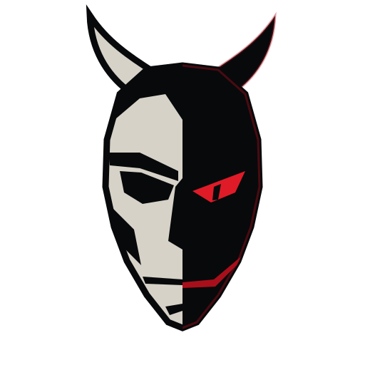

Tonight's game: The Core
The city belongs to Z.
Your phone, your car, your groceries work only while your subscription does. The city's old name expired with its licence.
You live outside it.
A Nomad. One of the unlogged.
No Z-ID, an old van without a network, and one stolen thing in the back: a charge big enough to switch a city off.
Tonight you and four friends are inside the tower.
Raven waits in the van, a voice on the radio. The tower has a voice too: ZETA, polite, everywhere. Three floors down runs The Core: every algorithm Z owns, in one room.
Sixty minutes.
Three floors of locks.
A phone that opens with a gesture. A locker that wants the guard's shift. A car that will not brake without a subscription, a shop that knows what you will buy, a firewall made of light. Then the charge.
Somewhere on the way a lamp comes on over the thing you missed. Lucky. Later the whole tower goes dark, and Raven says: keep moving.
Minute fifty-two. The Core.
Two keys, turned together.
The Core goes dark.
You made it out.
Raven is already driving. Behind you a whole city has just been logged out.
Step out of the story for a second
It is a game, of course.
An escape room.
The kind of place you book for an evening: a tower of plywood and steel, real locks, a clock on the wall counting down from sixty, and five friends who would rather not be beaten by a locker.
Every escape room has someone behind the wall.
The game master. A person watching the cameras, counting the minutes, deciding when a team has struggled long enough to deserve a hint. One person, one room, every single game.
Tonight nobody sat behind that wall.
You think you are alone.
You are wrong.
Play the night back
All night, someone was taking notes.
note "Rust and Mouse stalled 3.3 min on the phone, pressed 5 and 2 — not the U. Cue the ad neon." cue a neon above the ad screen
A light came on over the clue.
He didn't say a word.
twist blackout
You were ahead of schedule.
He noticed.
note "Fox and Rust at minute 15 keyed 2188 — 2-1-8-8, still wrong. Roster says Tomek 10–18 = 1018. Lobby 7 minutes behind plan." say ZETA → "Is there a problem with the locker, guests? Security codes are simple." say RAVEN → "Rust, one-two-three-five-seven. Now, before security notices."
Every voice in the room was his.
None of them was his own.
ZETA, the tower's polite machine. Raven, your friend on the radio. He spoke through both, and neither line existed before you walked in.
He has been taking notes on you, too.
This page only watched how you scroll. In a real room he has every sensor, every camera and every wrong answer.

ShadowmanThe AI game master for physical escape rooms.
The room was a simulation. He was not
He is built for the real thing.
Shadowman is an AI agent for people who own and build physical escape rooms. He takes the game master's chair: he watches the team through your sensors and cameras, and runs the locks, the lights and the voices for the whole hour. The players never see him. They see what he does.
He runs as an AI agent on a Fly.io Sprite, a small machine in the cloud that sleeps when nobody plays. His model and his voices are reached through a Sprites Connector, so he carries no passwords of his own.
Let a team in. Then get in his wayLive, about six minutes: he is real, the room and its five players are simulated. Stall the team, rush it, feed it wrong answers, press its help button. Watch him change his plan.
Write the room down.
He reads it and runs it.
He senses
- Door contacts, buttons, keypads
- RFID readers and weight plates
- Light, motion and temperature sensors
- Cameras: QR codes, where each player stands
He moves
- Maglocks, relays, solenoids
- Lamps, LED strips, blackout
- Screens and what they show
- Speakers: every character's voice
You describe the room in a plain document: its story, each puzzle, its answer, its clues. He was not written for this room; hand him another document and he runs another. Your locks, lamps and sensors stay; they only have to be on the venue's network. For whoever wired your room: Tasmota · ESPHome · Zigbee2MQTT · RTSP cameras · anything that speaks MQTT. The simulated room talks to him exactly as real locks and lamps would: take it away, connect yours.
He never looks away.
He never plays the same game twice.
He watches
Every sensor, every wrong attempt, where each player stands and how long they have been stuck.
He helps quietly
First a lamp over the clue. Then a nudge in a character's voice. A hand on the lock only as a last resort.
He raises the stakes
A team that is too fast gets a twist you allowed: a blackout, a patrol (nobody may move until it passes), a door between floors that locks again. Never the way out.
He rewrites the answers
Before the first clue is read, he changes the answers for this team and the clues with them: a new gesture on the phone, a new guard on the roster, a new code on the screen. What you printed on a wall stays as you printed it.
You read his notes
Every decision arrives with one cold line of why. Nobody has to sit behind the wall; anyone on your staff can read what he is thinking.
The exits are not his.
Everything else is.
In a real building some things must never depend on an AI. The way out, the alarms and the emergency systems live in a separate safety layer that keeps its own record of every change. He cannot reach it, and he never pretends he can.
Your room.
His game.
Shadowman, the AI game master for physical escape rooms.